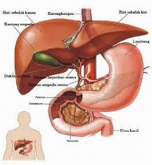

Hati
Hati adalah alat yang besar, terletak di bawah sekat rongga badan dan mengisi sebagian besar bagian atas rongga perut sebelah kanan. Hati membuat empedu yang terkumpul dalam kantung empedu. Empedu tersebut menjadi kental karena airnya diserap kembali oleh dinding kantung empedu. Pada waktu tertentu, empedu dipompakan ke dalam usus dua belas jari melalui pipa empedu.

Dalam metabolisme karbohidrat, hati berfungsi untuk:
Menyimpan glikogen.
Mengubah galaktosa dan fruktosa menjadi glukosa.
Glukoneogenesis (pengubahan molekul-molekul lemak, protein, dan laktat menjadi glukosa).
Membentuk senyawa kimia penting dari hasil perantara metabolisme karbohidrat.
Hati berfungsi sangat penting terutama untuk mempertahankan konsentrasi gula dalam darah. Pada metabolisme protein, hati berfungsi untuk:
Pembentukan sebagian besar lipoprotein.
Pembentuk sejumlah besar kolesterol dan fosfolipid.
Mengubah sejumlah besar karbohidrat dan protein menjadi lemak.
Pada metabolisme protein, hati berfungsi untuk:
Deaminasi asam amino, yaitu pengurangan gugus amin (-NH2) pada asam amino.
Pembentukan urea, untuk mengeluarkan amonia dari cairan tubuh.
Pembentukan plasma protein.
Interkonversi di antara asam amino yang berbeda untuk proses metabolisme tubuh.
Hati mempunyai kecenderungan untuk menyimpan vitamin. Vitamin yang disimpan di hati adalah A, D, dan Vitamin B12.